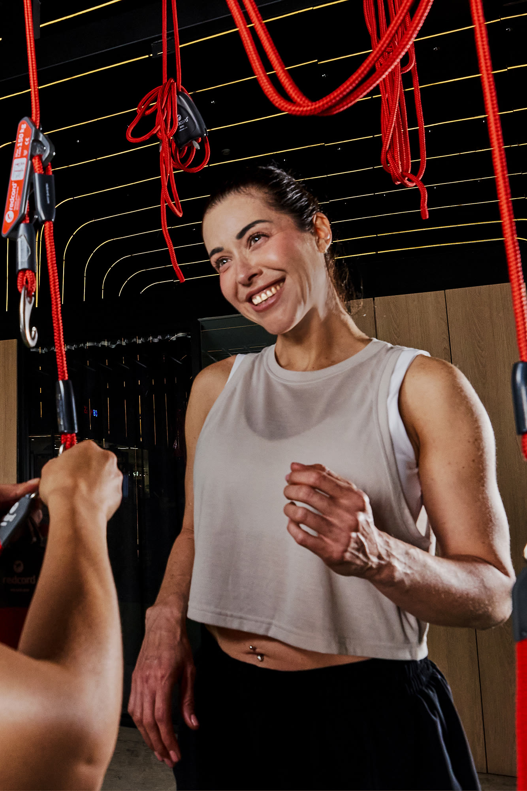
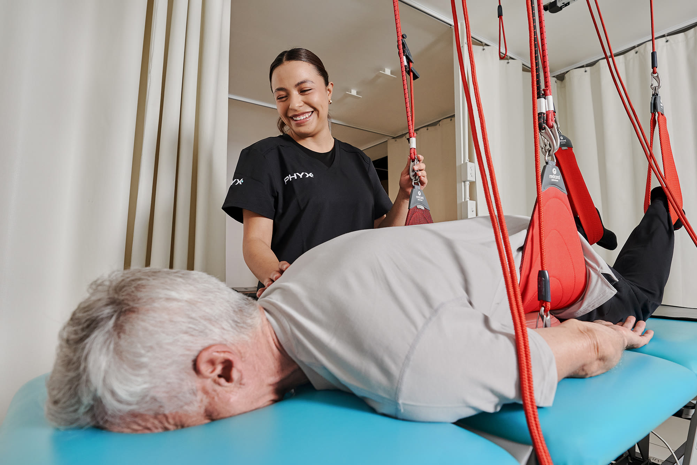
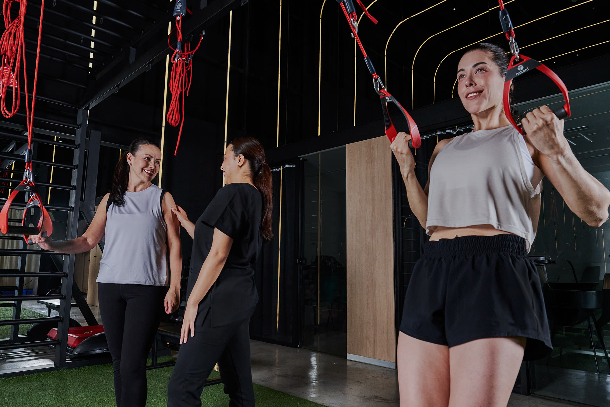
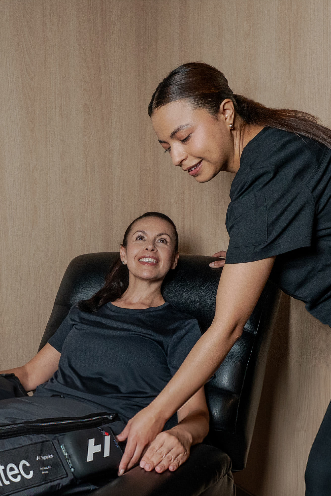
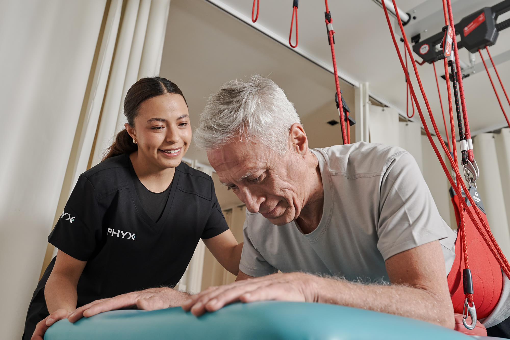
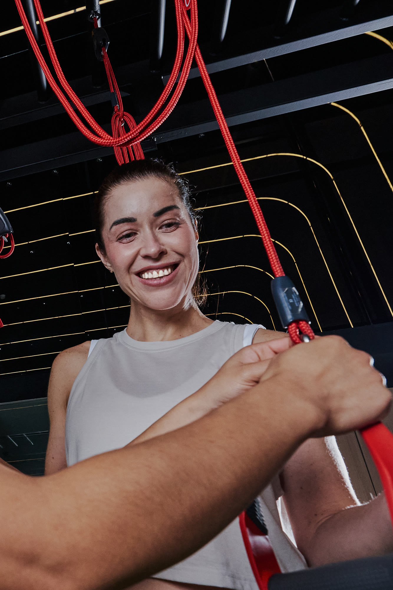

No somos un spa ni un consultorio tradicional. Creamos otra forma de rehabilitarte
Somos fisioterapia con especialistas y tecnología real, en centros pensados para que vuelvas a moverte bien, retomes lo que haces cada día y entiendas qué pasa con tu cuerpo
Ecatepec y CDMX
y servicios
inicial
y bienestar
promedio
dedicado a ti
Nacimos para cambiar la forma de hacer rehabilitación
Durante años, la fisioterapia en México se vivió igual: consultorios pequeños, sesiones de volumen, aparatos que nadie te explicaba y muy poca claridad sobre lo que pasaba con tu cuerpo. Salías de cada sesión sin saber si ibas mejor, peor o igual, y sin un plan claro para lo que seguía. Nosotros queríamos otra cosa
Por eso juntamos fisioterapeutas, ortopedistas y nutriólogos en un mismo lugar, con tecnología de grado clínico y un especialista dedicado a cada persona. Primero valoramos, luego actuamos, y medimos tu avance para que lo veas con datos y no solo con sensaciones. Así cambió la forma de vivir la rehabilitación
Hoy somos tres centros y una red de atención a domicilio. Nuestra visión es llevar este modelo a todo el país, con la misma calidad, el mismo trato y los mismos estándares en cada centro que abrimos

Nuestro equipo clínico
Fisioterapeutas, ortopedistas, nutriólogos y psicólogos trabajan juntos en cada caso. Tu fisioterapeuta te acompaña desde la valoración hasta el alta, y cuando hace falta, el ortopedista y la nutrióloga revisan tu avance con él para ajustar el plan sin que tengas que ir de consultorio en consultorio, repetir tu historia o empezar de cero cada vez
Creemos en la vocación de servicio, la honestidad, la excelencia profesional y las relaciones a largo plazo. Por eso no te vendemos sesiones: te explicamos qué encontramos, qué sigue y cuánto tiempo puede tomar. Atendemos al deportista que quiere volver a competir, a la persona que se recupera de una cirugía y al adulto mayor que quiere seguir caminando solo, cada uno con un plan distinto, porque cada cuerpo cambia a su propio ritmo y merece un proceso hecho a su medida, no una rutina genérica repetida para todos. Esa es la diferencia que queremos que sientas desde la primera cita
“La recuperación verdadera se refleja fuera del centro: en cómo caminas, te mueves y retomas tu rutina cada día, en casa y fuera de ella”
Cambiar la forma en que la gente se rehabilita no es rápido, pero está pasando. Cada persona que vuelve a caminar sin miedo, a entrenar o a jugar con sus hijos es la razón por la que abrimos cada centro, y por la que seguimos midiendo, aprendiendo y mejorando lo que hacemos todos los días, con cada paciente y en cada centro
Un centro de rehabilitación no tiene que sentirse como hospital
Luz cálida, madera, espacios amplios y tecnología que se explica antes de usarse. Diseñamos cada centro para que llegues tranquilo y te quieras quedar
Un espacio que te da calma desde que entras no es decoración, es parte de tu proceso
Un solo proceso, cuatro etapas
Unimos cuatro etapas que antes vivían separadas, en un solo lugar y con el mismo equipo
Valoración
Analizamos tu movimiento, revisamos tus estudios y tu historia, definimos prioridades y diseñamos, contigo, el proceso que seguirá tu cuerpo durante las próximas semanas, paso a paso y con objetivos claros que puedes medir
Tu plan
Te explicamos qué encontramos, qué sigue y cuánto puede tomar, con objetivos claros que puedes medir semana a semana
Rehabilitación
Sesiones Básica, Premium o Medical según lo que tu cuerpo necesita, con tecnología, terapia manual y ejercicio guiado
Readaptación
Vuelves a cargar, a correr o a subir escaleras con control, supervisión y una progresión medida cada semana
Performance
Fuerza, equilibrio y prevención para que no vuelvas a empezar de cero, con evaluación funcional cada mes
Recovery
Calor, frío y presoterapia para recuperarte mejor después de entrenar y llegar fresco a tu siguiente sesión
Medición
Reevaluamos fuerza, movilidad y control para ajustar tu plan cuando tu cuerpo cambia
Domicilio
Si moverte es difícil, llevamos la valoración y la rehabilitación a tu casa en Edomex y CDMX
De vuelta a tu vida
Te damos el alta cuando lo que haces cada día ya no te limita, y te dejamos un plan para seguir
Tu proceso · Día 1 → Alta
Valoración
Analizamos tu movimiento, revisamos tus estudios y tu historia, definimos prioridades y diseñamos, contigo, el proceso que seguirá tu cuerpo durante las próximas semanas, paso a paso y con objetivos claros que puedes medir
Tu plan
Te explicamos qué encontramos, qué sigue y cuánto puede tomar, con objetivos claros que puedes medir semana a semana
Rehabilitación
Sesiones Básica, Premium o Medical según lo que tu cuerpo necesita, con tecnología, terapia manual y ejercicio guiado
Readaptación
Vuelves a cargar, a correr o a subir escaleras con control, supervisión y una progresión medida cada semana
Performance
Fuerza, equilibrio y prevención para que no vuelvas a empezar de cero, con evaluación funcional cada mes
Recovery
Calor, frío y presoterapia para recuperarte mejor después de entrenar y llegar fresco a tu siguiente sesión
Medición
Reevaluamos fuerza, movilidad y control para ajustar tu plan cuando tu cuerpo cambia
Domicilio
Si moverte es difícil, llevamos la valoración y la rehabilitación a tu casa en Edomex y CDMX
De vuelta a tu vida
Te damos el alta cuando lo que haces cada día ya no te limita, y te dejamos un plan para seguir
El progreso no siempre es lineal, pero siempre es medible
Cada proceso de recuperación tiene su propio ritmo. Avanzar, pausar y ajustar también es parte del camino. Por eso medimos fuerza, movilidad y control en cada etapa, te mostramos cómo vas y ajustamos tu plan cuando tu cuerpo cambia, para que cada sesión tenga un propósito claro y veas tu avance con datos
Trabajamos con
La tecnología que usamos todos los días, en cada uno de nuestros centros
Lo que dicen de nosotros
“Volví a dormir tranquila”
 ★★★★★
★★★★★  Google · Mariana Gutiérrez
Google · Mariana Gutiérrez“Me siento más firme al caminar”
 ★★★★★
★★★★★  Facebook · Jorge Ramírez
Facebook · Jorge Ramírez“De la cirugía a correr otra vez”
 ★★★★★
★★★★★  Instagram · Daniela Ortiz
Instagram · Daniela Ortiz“Atención de primera”
 ★★★★★ Facebook · Laura Castañeda
★★★★★ Facebook · Laura Castañeda
Después del entreno
@fer.rios · Recovery Zone
Movilidad antes de entrenar
 @andres.slz · Performance
@andres.slz · Performance
Semana 8 de rodilla
@dani.ortiz · Rehabilitación
Entreno a los 67
@jorge.rmz · Adulto mayor
Mi rato de recuperación
@laura.cast · Recovery Zone
De vuelta a la pista
@ricardo.mdz · Performance
Ortopedista y fisio en un solo lugar
Ricardo Méndez · Paquete Ortopedia
Mi rutina de recuperación
Fernanda Ríos · Recovery Zone
Atención de primera
Laura Castañeda · Rehabilitación de hombroAhora, ven a vivirlo tú en persona
Agenda tu valoración, encuentra tu centro o empieza con tu primera visita